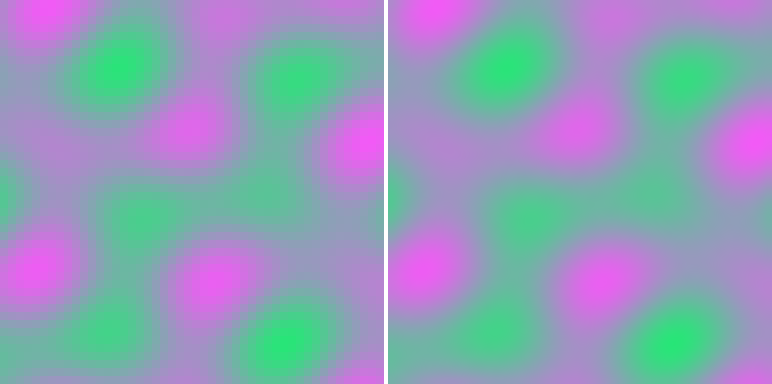
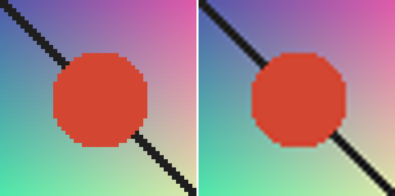
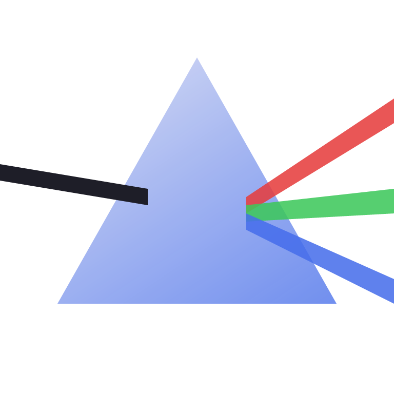
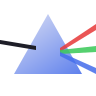

PRISM
One image in, multiple representations out.
PRISM is an image format built from a written spec outward: one container holding either a lossless raster payload with format-defined scaling, or a compact binary vector payload, with an optional authenticated encryption wrapper. The reference implementation is a dependency-free Rust library, and every byte of the format is documented in normative specs short enough to read in a sitting.
Every viewer scales it the same way
No raster format today defines its own scaling math, so the same PNG looks different in every application that resizes it. PRISM mandates the reconstruction kernel (Catmull-Rom, specified in pure integer fixed-point arithmetic), which makes scaled rendering bit-identical across platforms by construction. Scaling to native size returns the stored pixels exactly, so the lossless guarantee and the scaling guarantee are the same math.


True vectors in the same container
Geometric content does not need pixels at all. The vector payload stores pooled styles and paths with delta-encoded fixed-point coordinates, in the tradition of Haiku's HVIF and TinyVG. This entire logo, gradients and anti-aliasing included, is a 214-byte file rendering here at 768 pixels; it renders just as crisply at any other size.

Compression that earns its bytes
The raster codec is QOI's byte-aligned op vocabulary re-based on JPEG-LS median edge prediction, so a run means "the predictor kept being right," which follows smooth gradients instead of only flat regions. Tiles make decode partial and parallel. On the synthetic corpus, against the raster incumbents and, for honesty, SVG:
| image | raw | PRISM | QOI | PNG | SVG |
|---|---|---|---|---|---|
| gradient | 1,048,576 | 131,923 | 263,698 | 148,692 | 631 a |
| plasma | 1,048,576 | 241,085 | 281,766 | 298,299 | 397,866 b |
| shapes | 1,048,576 | 6,840 | 7,161 | 10,584 | 219 a |
| noise | 1,048,576 | 1,048,148 | 1,048,081 | 1,049,236 | 1,399,118 b |
| totals | 4,194,304 | 34.0% | 38.2% | 35.9% | 42.9% |
a: hand-authored geometry (shapes.svg, gradient.svg), visually equivalent but not pixel-exact; SVG's gradient interpolation and anti-aliasing differ at the pixel level, and PRISM, QOI, and PNG are all bit-exact. b: SVG cannot express sampled pixels, so the honest measurement is the source PNG embedded in the SVG as base64, a 33% markup.
{kind=link}
{kind=link}
The gradient row is the raster thesis in one number: prediction-runs land at half QOI's size. Noise compresses for nobody, as the pigeonhole principle requires; honest formats stay at 100% there rather than pretending otherwise. And the SVG column is the whole project's thesis in miniature: when an image truly is geometry, no raster codec comes within 30x of a scene description, and when it is samples, SVG has to smuggle a raster codec inside itself and pay base64 rent. The right response to that column is a container holding both representations, which is what PRISM is.
From PNG to .prism, bit for bit
Conversion is one command, and fidelity is not a claim, it is a test: prism encode then prism decode returns the exact source pixels, and the benchmark harness fails the run on any single-byte mismatch. Converting real PNG files, not raw pixels:
| source | PNG on disk | .prism | of PNG size | decode |
|---|---|---|---|---|
| shapes, 512 x 512 | 10,584 | 6,840 | 64.6% | bit-exact |
| plasma, 512 x 512 | 298,299 | 241,085 | 80.8% | bit-exact |
| gradient, 512 x 512 | 148,692 | 131,923 | 88.7% | bit-exact |
| logo render, 768 x 768 | 80,910 | 72,792 | 90.0% | bit-exact |
| demo graphic, 48 x 48 | 2,727 | 913 | 33.5% | bit-exact |
The last two rows tell the deeper story. That 768px logo render costs 72,792 bytes as pixels, faithfully kept; the same image as a PRISM vector payload costs 214 bytes and scales forever. Choosing the right representation beats any codec, and PRISM is one container that holds both.
Against SVG
The fair fight for the vector payload is SVG, so here it is. The same logo, authored twice: once as hand-minified SVG, once as PRISM vector records. Both render below; the SVG is drawn by your browser, the PRISM version by our integer-only rasterizer.

PRISM lands at 39% of the raw SVG and 68% of the gzipped SVG, before anyone optimizes the encoder, because binary opcodes, delta coordinates, and varints do structurally what gzip recovers only statistically. The honest other side: SVG opens everywhere and PRISM opens in PRISM; ubiquity is the one feature no format design can encode. On bytes, the vector payload is exactly where it should be: ahead of the incumbent.
The rest of the container
- CRC32 on every chunk; unknown chunk types skip cleanly, which is the forward-compatibility mechanism.
- Optional ChaCha20-Poly1305 wrapper that authenticates the header alongside the payload: a wrong key or a tampered bit fails outright. Standard cryptography only, feature-gated so the core library keeps its empty dependency list.
- Little-endian, byte-aligned, 8-bit sRGB RGBA in version 1, with header room reserved for more.
- A
prismCLI: encode, decode, info, scale, compare, bench, encrypt, decrypt.
Spec-driven, and a teaching project
Every phase wrote its normative spec before its code: container, raster payload, reconstruction, vector payload. The implementation doubles as a Rust course: six lessons tie each phase to the language features it exercises, from wrapping arithmetic and slices to fixed-point determinism and cargo features.